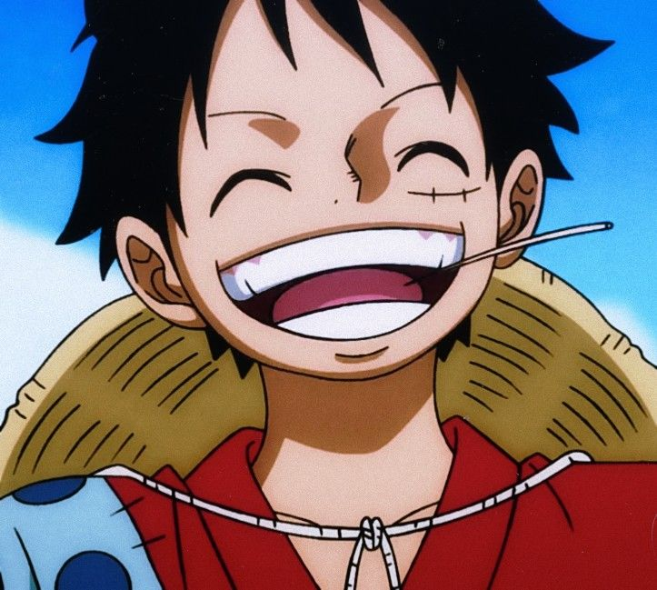
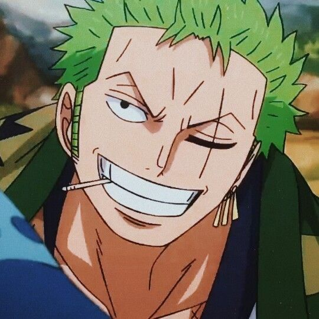
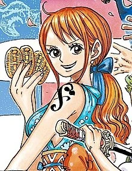
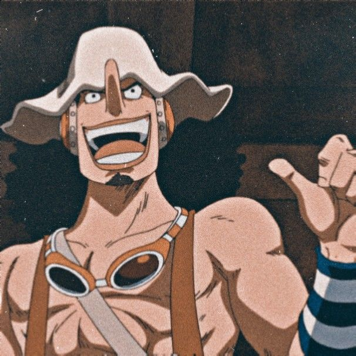
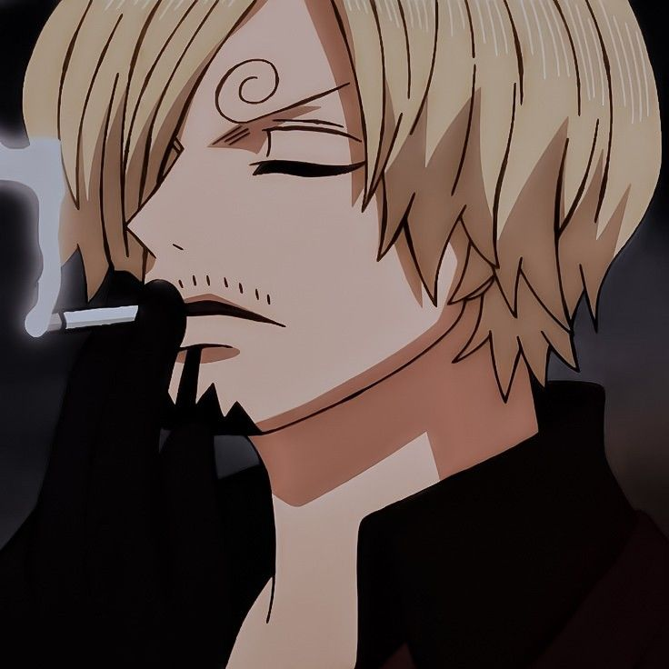
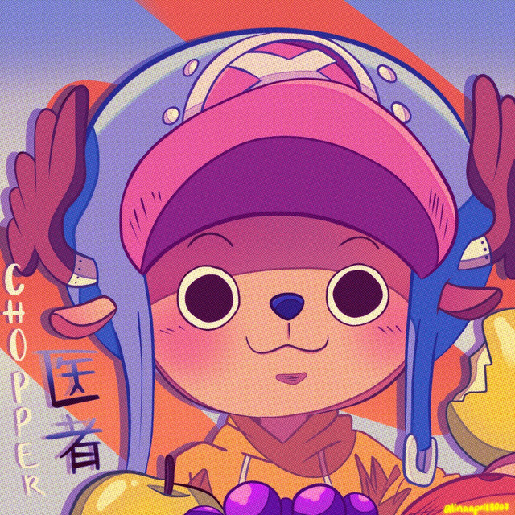
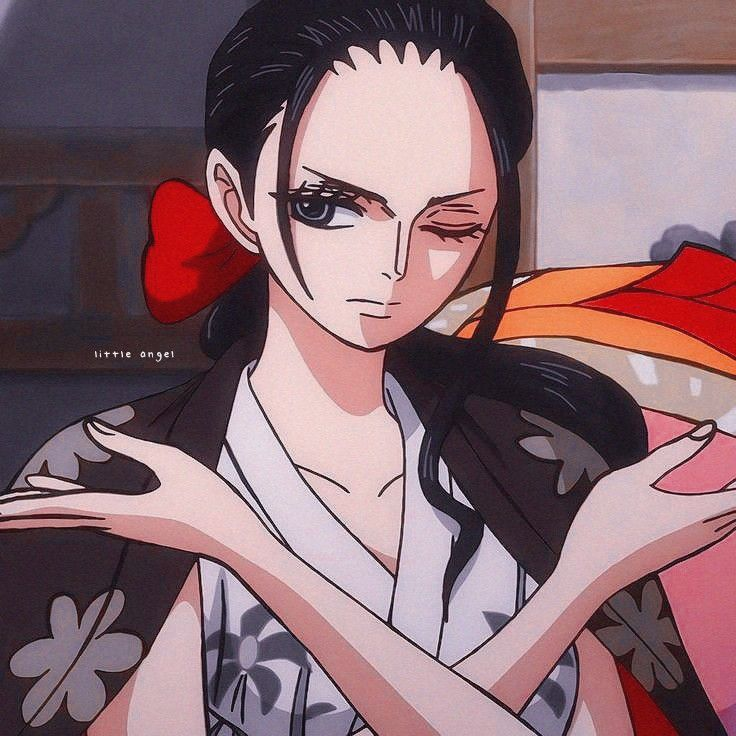
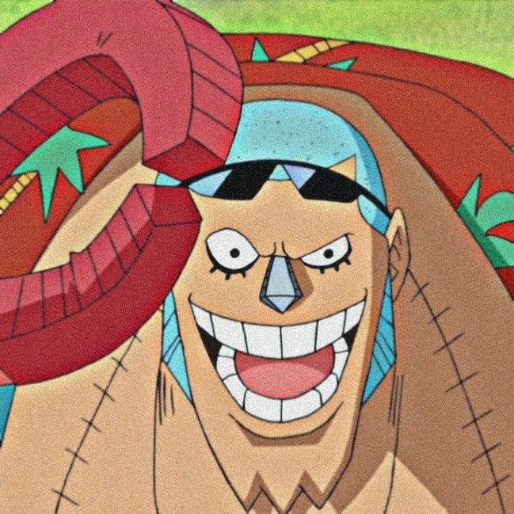
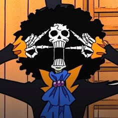
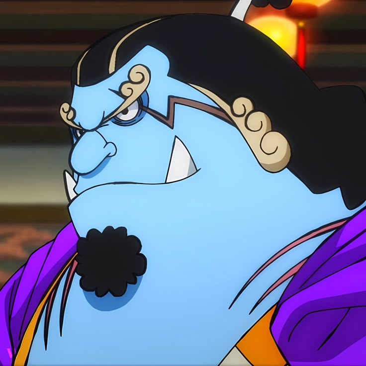

Introdução
One Piece é uma obra-prima da cultura pop japonesa, criada por Eiichiro Oda. Originalmente publicada como mangá em 1997 na revista Weekly Shonen Jump, a história rapidamente se transformou em um fenômeno global, sendo adaptada para anime pela Toei Animation em 1999. Com mais de mil episódios e capítulos, One Piece se consagrou como a série de mangá mais vendida da história, quebrando inúmeros recordes ao redor do mundo. A narrativa se passa em um vasto universo dominado por oceanos, reinos exóticos, criaturas míticas e piratas com poderes extraordinários. O mundo de One Piece é construído com riqueza de detalhes, explorando temas como liberdade, justiça, amizade, sonhos e sacrifício. Com uma legião de fãs apaixonados e uma história em constante evolução, One Piece se tornou mais do que apenas um anime ou mangá — é uma jornada épica que atravessa gerações.
Sinopse
A história acompanha Monkey D. Luffy, um jovem de espírito livre e coração puro que sonha em se tornar o Rei dos Piratas. Inspirado por seu ídolo de infância, o lendário pirata Shanks, Luffy parte em uma jornada pelos perigosos mares do mundo em busca do maior tesouro já existente: o One Piece, deixado pelo antigo Rei dos Piratas, Gol D. Roger. No entanto, Luffy não é um pirata comum. Após comer uma das misteriosas Akuma no Mi (Frutas do Diabo), ele ganhou um corpo com propriedades de borracha, o que lhe proporciona habilidades únicas — mas ao custo de perder a capacidade de nadar. Ao longo de sua jornada, Luffy forma uma tripulação improvável e carismática, os Piratas do Chapéu de Palha, composta por espadachins, navegadores, atiradores, cozinheiros, médicos e até mesmo um esqueleto músico e um ciborgue carpinteiro. Juntos, eles enfrentam marinheiros, caçadores de recompensas, outras tripulações piratas e criaturas míticas, tudo isso enquanto desvendam os segredos do mundo e lutam para proteger seus ideais. One Piece não é apenas uma aventura por mares desconhecidos — é uma história sobre amizade, coragem, superação e a busca incansável por liberdade.
Sobre o Autor
Eiichiro Oda é o criador de One Piece, uma das séries de mangá mais populares e influentes do mundo. Nascido em 1º de janeiro de 1975, no Japão, ele decidiu ser mangaká ainda criança, inspirado por Dragon Ball e filmes de piratas. Começou sua carreira aos 17 anos com o mangá Wanted! e trabalhou como assistente em outras obras antes de lançar One Piece em 1997, na revista Weekly Shonen Jump. Desde então, a série se tornou um fenômeno global e o mangá mais vendido da história. Oda é conhecido por sua criatividade, dedicação extrema ao trabalho e por construir um universo rico e cheio de detalhes. Ele continua escrevendo One Piece com o objetivo de entregar um final memorável para os fãs.
Personagens
| Monkey D. Luffy |  |
Capitão |
| Roronoa Zoro |  |
Espadachim |
| Nami |  |
Navegadora |
| Usopp |  |
Atirador |
| Sanji |  |
Cozinheiro |
| Tony Tony Chopper |  |
Médico |
| Nico Robin |  |
Arqueóloga |
| Franky |  |
Carpinteiro |
| Brook |  |
Músico |
| Jinbe |  |
Timoneiro |